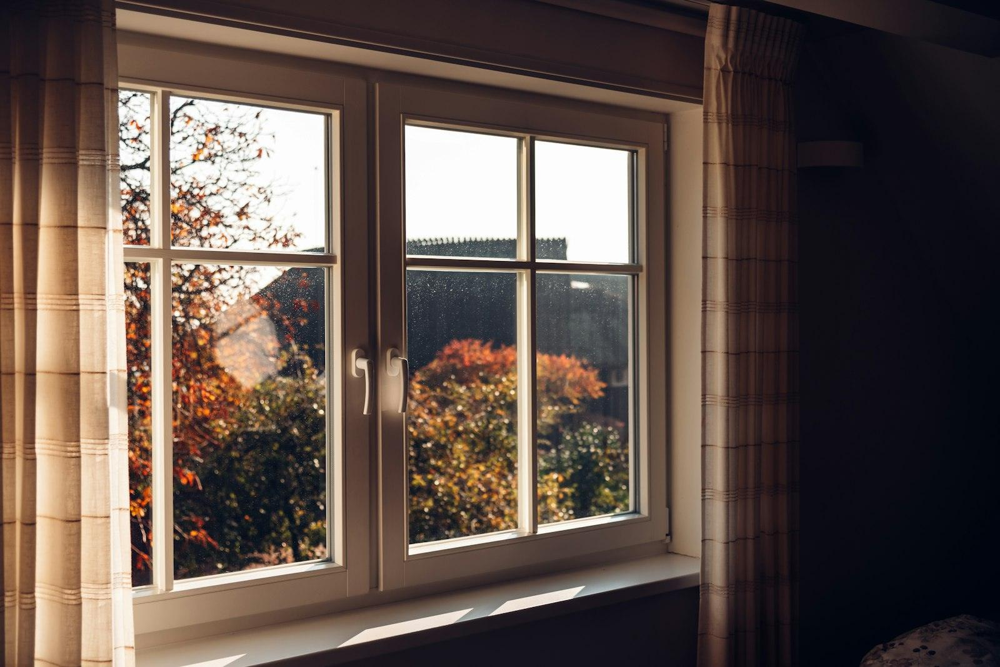
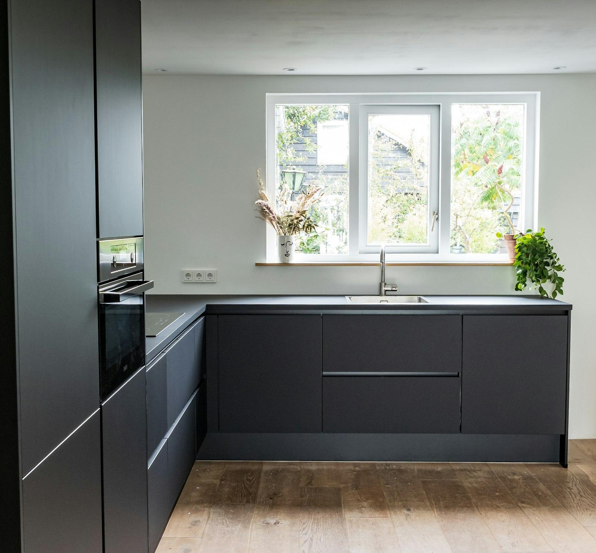
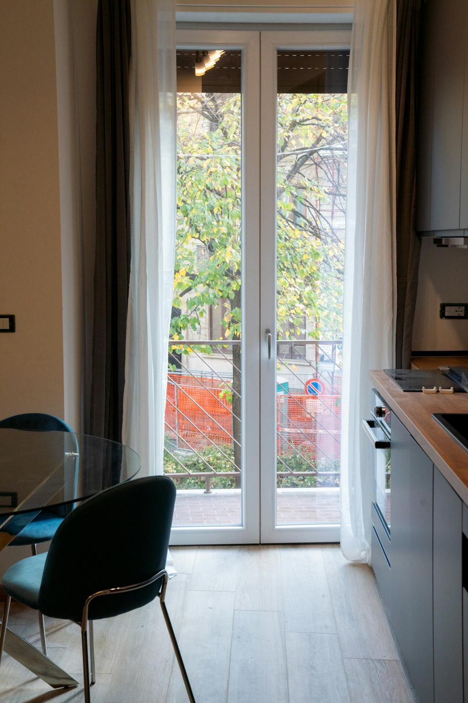
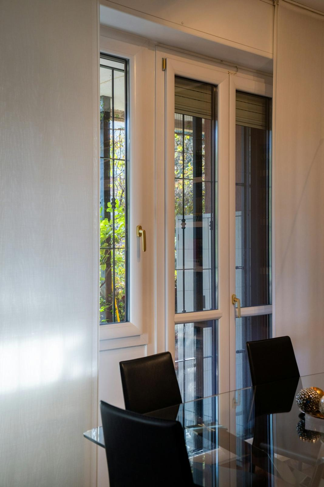
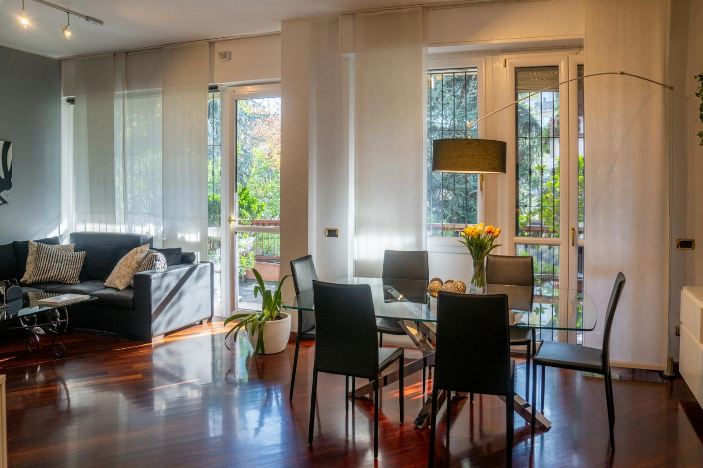
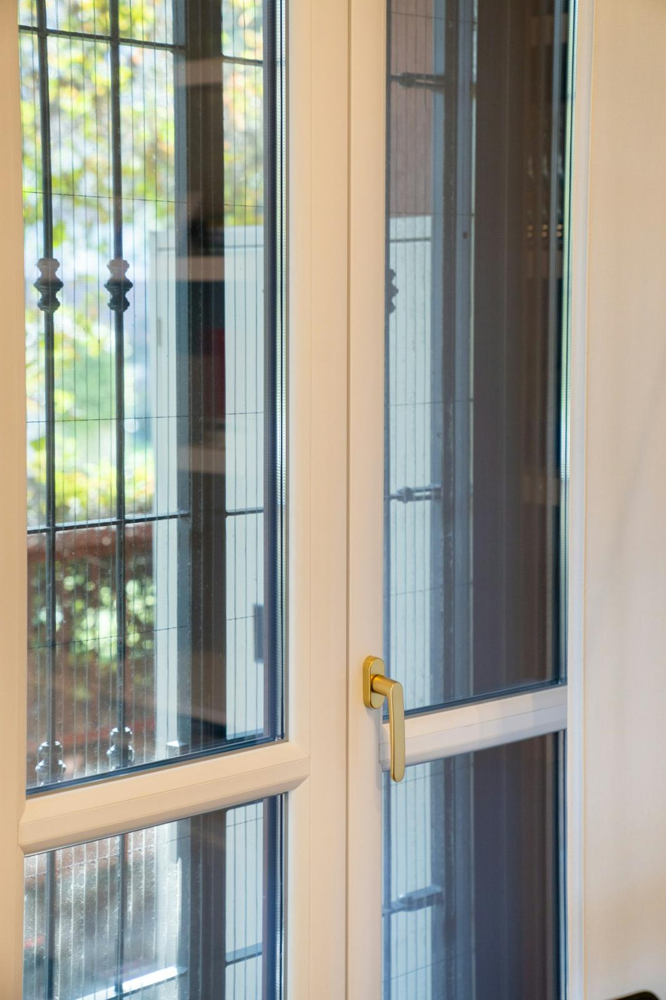

Eén adres voor alles rond uw kozijnen
Van een compleet nieuwe gevel tot één raam dat klemt: u belt één nummer.

Alles in kunststof, van raam tot schuifpui
Onderhoudsarm, goed isolerend en in elke kleur. Eén leverancier voor de hele gevel.

Kozijnen en ramen Vast, draaiend of kiepend, in elke maat en indeling.
Draai-kiepramen Op kiepstand ventileren, wijd open om te luchten. Voordeuren
Stevig, goed isolerend en in de stijl van uw woning.
Voordeuren
Stevig, goed isolerend en in de stijl van uw woning.
 Achterdeuren
Veel licht, goed afsluitbaar en onderhoudsarm.
Achterdeuren
Veel licht, goed afsluitbaar en onderhoudsarm.

Schuifpuien Grote glasvlakken die licht lopen en strak sluiten.
Tuindeuren Dubbel openslaand, zo loopt u de tuin in. Complete gevel
Alle kozijnen en deuren in één keer vervangen.
Complete gevel
Alle kozijnen en deuren in één keer vervangen.
 Hang- en sluitwerk
Grepen, scharnieren en sloten die soepel blijven.
Hang- en sluitwerk
Grepen, scharnieren en sloten die soepel blijven.
Een kozijn is pas goed als u er nooit meer aan hoeft te denken. Daarom meten wij zelf in, monteren wij zelf en komen wij zelf terug als er iets is.

Van eerste contact tot oplevering
Vijf stappen, met bij elke stap hoe lang het duurt. Zo weet u vooraf waar u aan toe bent.
-
1Vandaag nog
Contact
Bel, app of vul het formulier in. U krijgt dezelfde werkdag een reactie.
-
2Binnen 1 week
Inmeten aan huis
Wij komen langs, meten alles op en nemen kleurstalen mee. Gratis en vrijblijvend.
-
3Binnen 2 werkdagen
Offerte met vaste prijs
Eén heldere offerte, inclusief montage en afvoer. Geen verrassingen achteraf.
-
46 tot 8 weken
Productie op maat
Uw kozijnen worden op maat gemaakt. Ondertussen plannen wij samen de montagedag.
-
1 tot 3 dagen
Montage en oplevering
Wij plaatsen, werken af en voeren de oude kozijnen af. Samen lopen we alles na.
Recent opgeleverd
Veeg of scrol opzij voor meer projecten

Goed om te weten
Staat uw vraag er niet bij? Bel gerust, wij denken graag mee.
Wat kost een nieuw kunststof kozijn?
Dat hangt af van de maat, het type, de kleur en het glas. Na het inmeten ontvangt u een offerte met een vaste prijs, inclusief montage en afvoer van de oude kozijnen.
Hoe lang duurt het plaatsen?
De levertijd is ongeveer 6 tot 8 weken na akkoord. De montage zelf duurt gemiddeld 1 tot 3 dagen, afhankelijk van het aantal kozijnen.
Hoe snel komen jullie voor een reparatie?
Meestal binnen 2 werkdagen. Sluit een raam of deur niet meer? Bel dan direct, dan zoeken we zo snel mogelijk een oplossing.
Repareren jullie ook kozijnen van een andere leverancier?
Ja. Wij repareren kozijnen van vrijwel alle merken en systemen, ook als wij ze niet zelf hebben geplaatst.
Hoe vaak is onderhoud nodig?
Kunststof is onderhoudsarm, niet onderhoudsvrij. Wij adviseren elke twee jaar een controle waarbij we beslag smeren, ramen afstellen en rubbers nalopen.
Offerte binnen 2 werkdagen
Kies wat u het makkelijkst vindt. Bellen of appen gaat het snelst, het formulier kan altijd.
Bereikbaar: ma t/m vr 8.00 – 17.30 uur